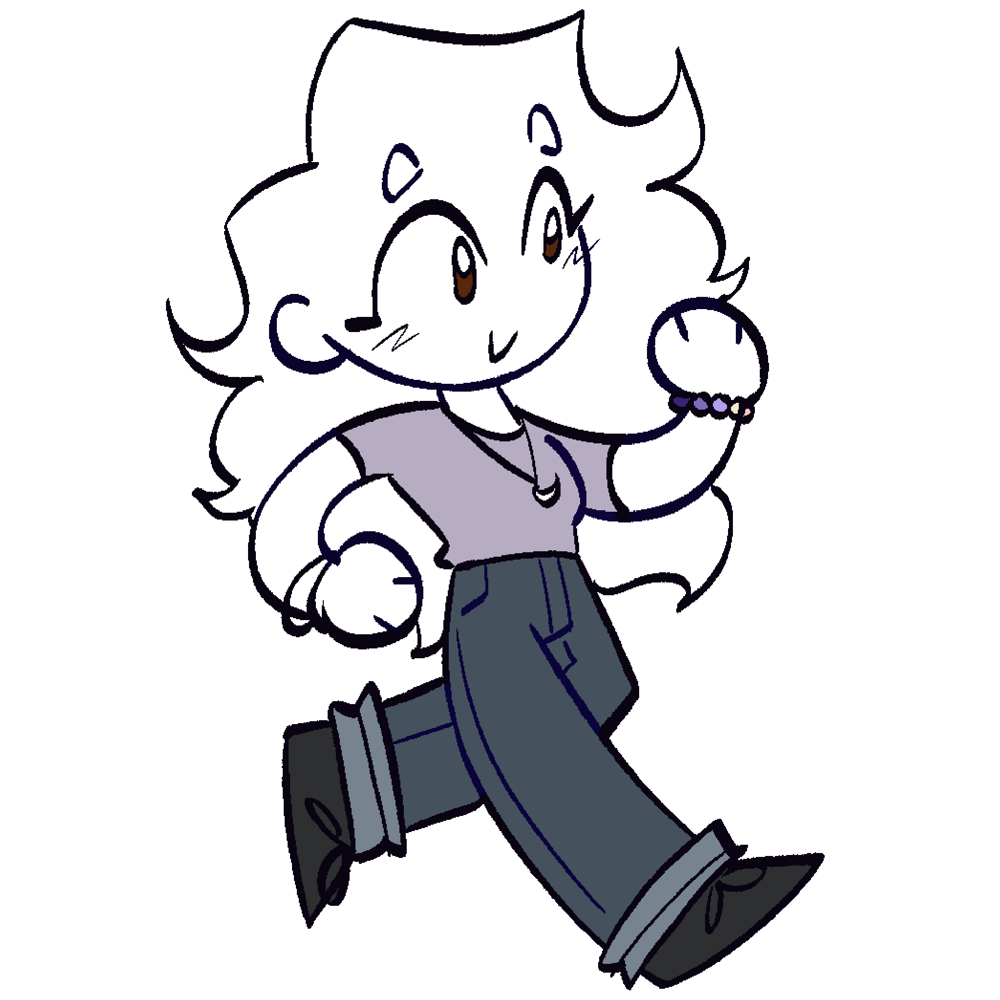

As you can see, Animation is the technique of creating the illusion of movement by rapidly displaying a sequence of static images or frames. But it can also be different media; Traditional/Cel Animation, 2D Animation, 3D Animation, Stop Motion, and Motion Graphics. In this page, this animation is using keyframes and JavaScript in Dreamweaver Adobe.
Animations is mostly use for the entertainment industry. An animated cartoon, or simply a cartoon, is an animated film, usually a short film, that features an exaggerated style. This style is often inspired by comic strips, gag cartoons, and other non-animated art forms.